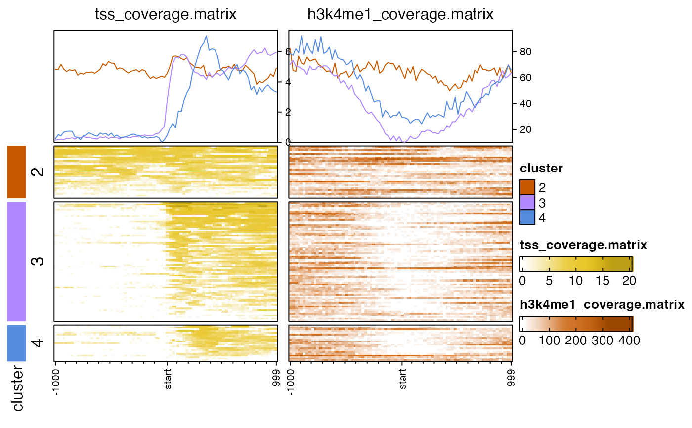
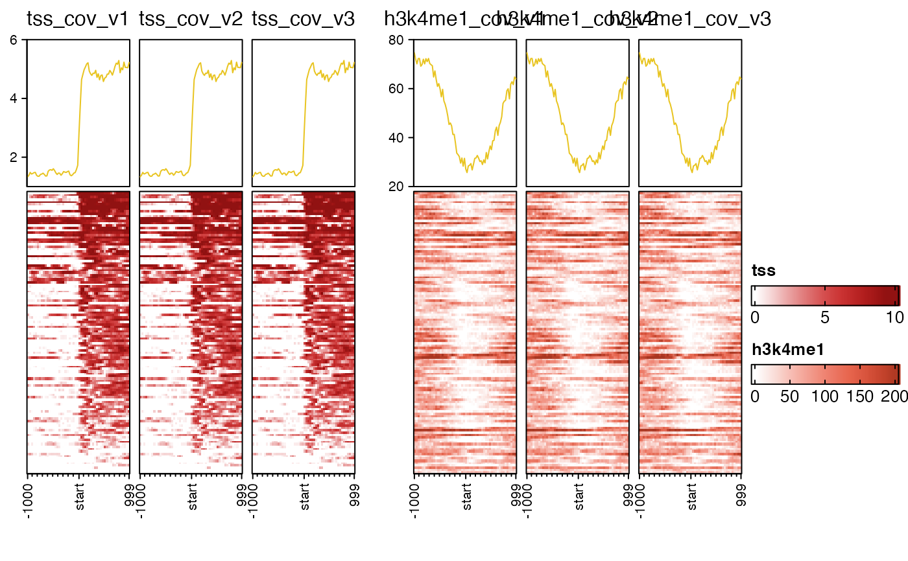
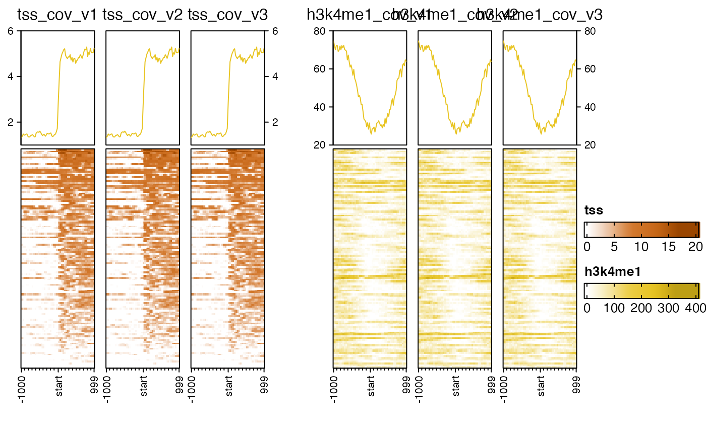
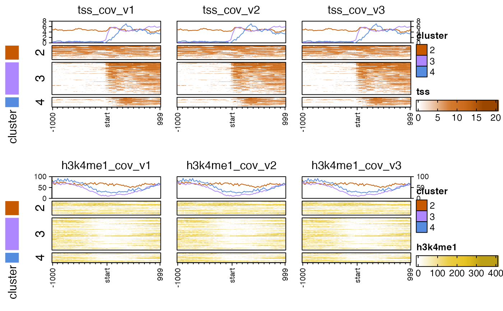
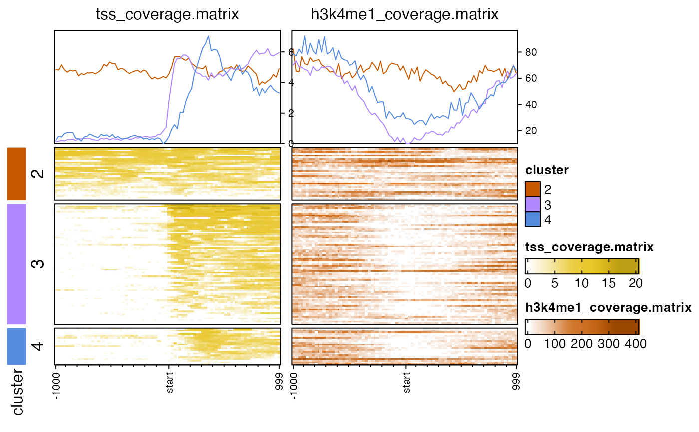
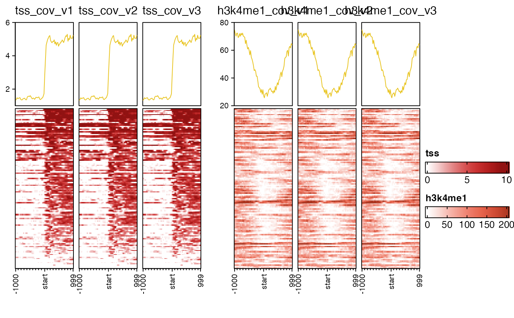
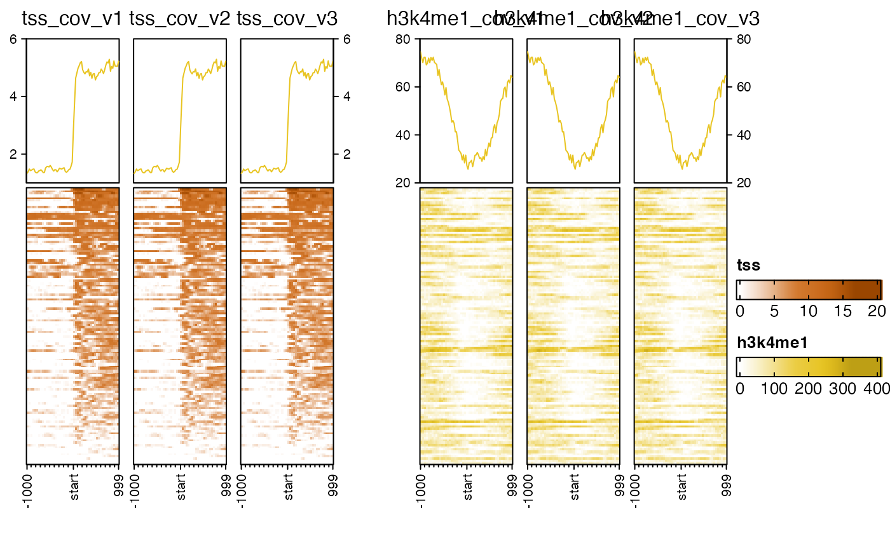
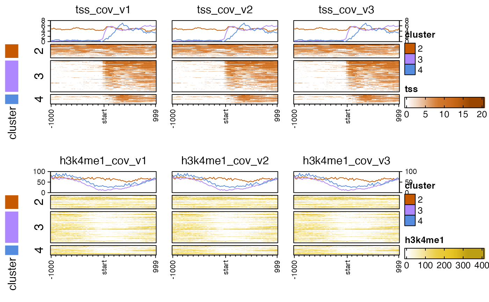

Make multiple coverage heatmaps
nmatlist2heatmaps(
nmatlist,
panel_groups = NULL,
title = NULL,
caption = NULL,
upstream_length = NULL,
downstream_length = NULL,
k_clusters = 0,
k_subset = NULL,
k_colors = NULL,
k_width = grid::unit(5, "mm"),
k_method = c("euclidean", "pearson", "correlation"),
k_heatmap = main_heatmap,
partition = NULL,
rows = NULL,
row_order = NULL,
nmat_colors = NULL,
middle_color = "white",
nmat_names = NULL,
main_heatmap = 1,
anno_df = NULL,
byCols = NULL,
color_sub = NULL,
anno_row_marks = NULL,
anno_row_labels = NULL,
top_annotation = NULL,
top_anno_height = grid::unit(3, "cm"),
top_axis_side = c("right"),
legend_max_ncol = 2,
legend_base_nrow = 5,
legend_max_labels = 40,
show_heatmap_legend = TRUE,
hm_nrow = 1,
transform = "none",
signal_ceiling = NULL,
axis_name = NULL,
axis_name_gp = grid::gpar(fontsize = 8),
axis_name_rot = 90,
column_title_gp = grid::gpar(fontsize = 12),
lens = -2,
anno_lens = 8,
pos_line = FALSE,
seed = 123,
ht_gap = grid::unit(3, "mm"),
profile_value = c("mean", "sum", "abs_mean", "abs_sum"),
ylims = NULL,
border = TRUE,
iter.max = 20,
use_raster = TRUE,
raster_quality = 1,
raster_by_magick = TRUE,
do_plot = TRUE,
legend_width = grid::unit(3, "cm"),
trim_legend_title = TRUE,
heatmap_legend_param = NULL,
annotation_legend_param = NULL,
return_type = c("heatmaplist", "grid"),
show_error = FALSE,
verbose = FALSE,
...
)Arguments
- nmatlist
listcontainingnormalizedMatrixobjects, usually the output fromcoverage_matrix2nmat().- k_clusters
integer number of k-means clusters to use to partition each heatmap. Use
0orNULLfor no clustering.- k_subset
integer vector of k-means clusters to retain. Often one cluster contains mostly empty values, and can be removed using this mechanism.
- k_colors
vector of R colors, or
NULLto use the output ofcolorjam::rainbowJam(k_clusters).- k_width
unitwidth of the k-means cluster color bar, used withk_clusters.- k_method
characterstring indicating the distance used by k-means, where the common default is"euclidean", however a useful alternative for sequence coverage data is"correlation"as implemented inamap::Kmeans().- k_heatmap
integerindicating which one or morenormalizedMatrixobjects innmatlistwill be used for k-means clustering, whenk_clustersis defined more than 1.- partition
characterorfactorvector used to split rows of each matrix innmatlist, named by rownames. This value is ignored whenk_clustersis supplied.- rows
charactervector ofrownames(nmatlist)orintegervector with index of rows to keep from each matrix innmatlist.- row_order
integer vector used to order rows. When
TRUEorNULLit uses the default forEnrichedHeatmap::EnrichedHeatmap()which is theEnrichedHeatmap::enriched_score()for the matrixmain_heatmap. WhenFALSEthe rows are ordered by the order they appear inrows, which is either the order they appear innmatlistor the order after sortinganno_df. WhenTRUEthe default- nmat_colors
named character vector of R colors, to colorize each heatmap. When
NULLthencolorjam::rainbowJam()is used to create colors for each heatmap panel.- middle_color
characterR compatible color used when creating a divergent color gradient, this color is used as the middle color. Usually this color should be either"white"or"black".- nmat_names
charactervector, orNULL, optional, used as custom names for each heatmap innmatlist. Whennmat_names=NULLthesignal_namevalues are used from eachnmatlistmatrix.- main_heatmap
integer index referring to the entry in
nmatlistto use for clustering and row ordering.- anno_df
data.frameor object that can be coerced, used to annotate rows of each matrix. It must haverownames(anno_df)that matchrownames(nmatlist). When supplied, data can be sorted usingbyCols. Note that only therownames(anno_df)present in bothnmatlistandanno_dfare used to display the heatmaps. These rows may also be subsetted using argumentrows.- byCols
character vector of values in
colnames(anno_df)used to sort the data.frame viajamba::mixedSortDF(). Any colname with prefix-will be reverse-sorted.- color_sub
character vectorof R colors to be used as categorical colors, whose names match items to be colored. This argument is intended foranno_df, for any column inanno_dfwhere all values in that column are also innames(color_sub)will be colorized usingcolor_subinstead of generating new colors. Also colors for partition and kmeans clusters, usually defined withk_colorscan be defined in color_sub, ifnames(color_sub)match the partition labels.- anno_row_marks
character vector of
rownameswhich will be labeled beside the heatmaps, using theComplexHeatmap::anno_mark()method. It currently requiresanno_dfbe defined, since it uses the first column inanno_dfas a one-column heatmap, to anchor the labels.- anno_row_labels
character vector of optional character labels to use instead of
rownames. IfNULLthenanno_row_marksare used. Oranno_row_labelsmay contain a character vector ofcolnames(anno_df)which will create labels by concatenating each column value separated by space" ".- top_annotation
HeatmapAnnotationorlogicalorlist:TRUEto use the default approachEnrichedHeatmap::anno_enriched()FALSEto prevent the display of top annotationHeatmapAnnotationwhich should be in the formComplexHeatmap::HeatmapAnnotation(EnrichedHeatmap::anno_enriched())or equivalent. This form is required for the annotation function to be called on each coverage matrix heatmap.listof objects suitable to be passed as atop_annotationargument for each coverage heatmap, in order ofnmatlist.
- top_anno_height
unitobject to define the default height of thetop_annotation. Whentop_annotationis not defined, the default method usesEnrichedHeatmap::anno_enriched()withheight=top_anno_height.- top_axis_side
charactervalue indicating which side of the top annotation to place the y-axis labels. When there is one value, it is repeated tolength(nmatlist), otherwise it is mainly used whenpanel_groupsare provided, in which case only one top annotation is label per contiguous set of panels in the same panel group. In that case"left"will label the left side of the first panel in each group,"right"will label the right side of the last panel in each group. Values: "left", "right", "both", "none", "all".- legend_max_ncol
integer number indicating the maximum number of columns allowed for a categorical color legend.
- legend_base_nrow
integer number indicating the base number of rows used for a categorical color legend, before additional columns are added. Once the number of elements exceeds
(legend_max_ncol * legend_base_nrow)then rows are added, but columns never exceedlegend_max_ncol.- legend_max_labels
integerto define the maximum labels to display as a color legend. When anyanno_dfcolumn contains more than this number of categorical colors, the legend is not displayed (because it would prevent display of the heatmaps at all).- hm_nrow
integer number of rows used to display the heatmap panels.
- transform
either
characterstring referring to a numeric transformation, or afunctionthat applies a numeric transformation. Validcharacterstring values:"log2signed"appliesjamba::log2signed()which applieslog2(1+x)transform to the absolute value, then multiplies by the originalsign(x);"sqrt"applies square root;"cubert"applies cube rootx^(1/3);"qrt"applies fourth rootx^(1/4). When there are negative numeric values, the transformation is applied to absolute value, then multiplied by the original sign. Therefore, the transformation is applied to adjust the magnitude of the values. These values are passed toget_numeric_transform()which may have more information.- signal_ceiling
numericvector whose values are recycled to lengthlength(nmatlist). The signal_ceiling applies a maximum numeric value to the color ramp for each matrix innmatlist. The value is passed toget_nmat_ceiling(), which recognizes three numeric forms:signal_ceiling > 1: this specific numeric value is applied as the ceilingsignal_ceiling > 0andsignal_ceiling <= 1: this numeric value is interpreted as a quantile threshold, for examplesignal_ceiling=0.75would calculate ceilingquantile(x, probs=0.75).signal_ceilingisNULL: the maximum absolute value of each matrix is used as the ceiling.
Note that the ceiling is only applied to color scale and not to the underlying data, which is useful to know because any clustering and row ordering steps will use the full data as needed.
If data needs to be strictly controlled to a numeric ceiling, that processing should take place on
nmatlistbefore callingnmatlist2heatmaps().- axis_name_gp
x-axis label graphic parameters, as output from
grid::gpar(). For example to define the x-axis font size, use the formgrid::gpar(fontsize=8).- axis_name_rot
numeric value either
0or90indicating whether to rotate the x-axis names, where90will rotate labels, and0will leave labels horizontal.- column_title_gp
heatmap title graphic parameters, as output from
grid::gpar(). For example to define the x-axis font size, use the formgrid::gpar(fontsize=8). This argument is passed directly toComplexHeatmap::Heatmap().- lens
numeric value used to scale each heatmap color ramp, using
getColorRamp(). Values above zero apply the color gradient more rapidly starting from the lowest value, making the color appear more intense for lower numeric values. Values below zero apply the color gradient less rapidly, which makes lower numeric values appear less intense. This adjustment is intended to help apply suitable color contrast depending upon the range of numeric values. Thelensvalues are applied to each matrix innmatlist, and so it is recycled tolength(nmatlist)as needed. Note thatsignal_ceilingis also intended to help apply the color gradient to a suitable numeric range, and thelensargument is applied relative to the numeric range being used.- anno_lens
numeric value used to scale the annotation heatmap color scales, see
lensfor details. Values higher than 1 make the color gradient more intense, values below -1 make the color gradient less intense.- seed
numeric value used with
set.seed()to set the random seed. Set toNULLto avoid runningset.seed().- ht_gap
unitsize to specify the gap between multiple heatmaps. This argument is passed toComplexHeatmap::draw(). An example isgrid::unit(8, "mm")to specify 8 millimeters.- profile_value
character string to define the type of numeric profile to display at the top of each heatmap. This argument is passed to
EnrichedHeatmap::anno_enriched(). Values:"mean"the mean profile;"sum"the sum;"abs_sum"sum of absolute values;"abs_mean"the mean of absolute values.- ylims
vectorof maximum y-axis values for each heatmap profile; orlist- border
logicalindicating whether to draw a border around the heatmap, which includes all heatmap panels in the event of splitting by clustering. Thebordercan be supplied as a vector, so thebordercan be applied specifically to each heatmap if needed.- iter.max
integer value indicating the maximum iterations performed by k-means clustering, only relevant when
k_clustersis non-zero.- use_raster
logical indicating whether to create heatmaps using raster resizing, almost always recommended
TRUE.- raster_quality
logicalpassed toComplexHeatmap::Heatmap(), used whenuse_raster=TRUEand defines the level of detail retained, and is used only whenraster_by_magick=FALSE. Using larger numbers decreases speed substantially.- raster_by_magick
logicalpassed toComplexHeatmap::Heatmap(), to enable ImageMagick use during rasterization. By default this option isTRUEand is only disabled when the R package"magick"is not installed, or not properly configured. If you see a warning "instalilng 'magick' will improve rasterization" then check the R package withlibrary(magick)and see if there are error messages. When"magick"is not available, the rasterization is substantially slower, and may produce files much larger than normal.- do_plot
logical indicating whether to draw the heatmaps, where
FALSEwill return the data used to create heatmaps without actually drawing the heatmaps.- return_type
character string indicating the type of data to return:
"heatmaplist"returns the list of heatmaps, which can separately be arranged together usingComplexHeatmap::draw()orgrid::grid.draw().- show_error
logical indicating whether to add error bars to the profile plot at the top of each heatmap. These error bars are calculated by
EnrichedHeatmap::anno_enriched()usingmatrixStats::colSds(x)/nrow(x).- verbose
logical indicating whether to print verbose output.
- ...
additional arguments are passed to
EnrichedHeatmap::EnrichedHeatmap()to allow greater customization of details. Note that many...arguments are also passed toComplexHeatmap::Heatmap().
Details
This function takes a list of normalizedMatrix objects,
usually the output of coverage_matrix2nmat(), and
produces multiple heatmaps using
EnrichedHeatmap.
This function is intended to be a convenient wrapper to help keep each data matrix in order, to apply consistent clustering and filtering across all data matrices, and to enable optional multi-row heatmap layout.
See also
Other jam coverage heatmap functions:
coverage_matrix2nmat(),
get_nmat_ceiling(),
nmathm_row_order(),
validate_heatmap_params(),
zoom_nmatlist(),
zoom_nmat()
Examples
## There is a small example file to use for testing
library(jamba)
#>
#> Attaching package: ‘jamba’
#> The following object is masked from ‘package:IRanges’:
#>
#> heads
cov_file1 <- system.file("data", "tss_coverage.matrix", package="platjam");
cov_file2 <- system.file("data", "h3k4me1_coverage.matrix", package="platjam");
cov_files <- c(cov_file1, cov_file2);
names(cov_files) <- gsub("[.]matrix",
"",
basename(cov_files));
nmatlist <- lapply(cov_files, coverage_matrix2nmat);
nmatlist2heatmaps(nmatlist);
 # sometimes data transform can be helpful
nmatlist2heatmaps(nmatlist,
transform=c("log2signed", "sqrt"));
# sometimes data transform can be helpful
nmatlist2heatmaps(nmatlist,
transform=c("log2signed", "sqrt"));
 # k-means clusters, default uses euclidean distance
nmatlist2heatmaps(nmatlist, k_clusters=4,
transform=c("log2signed", "sqrt"));
# k-means clusters, default uses euclidean distance
nmatlist2heatmaps(nmatlist, k_clusters=4,
transform=c("log2signed", "sqrt"));
 # k-means clusters, "correlation" or "pearson" sometimes works better
nmatlist2heatmaps(nmatlist,
k_clusters=4,
k_method="pearson",
transform=c("log2signed", "sqrt"));
#> Warning: empty cluster: try a better set of initial centers

# example showing usage of top_axis_side
# and panel_groups
nmatlist2 <- nmatlist[c(1, 1, 1, 2, 2, 2)];
names(nmatlist2) <- jamba::makeNames(names(nmatlist2))
for (iname in names(nmatlist2)) {
attr(nmatlist2[[iname]], "signal_name") <- gsub("coverage", "cov", iname);
}
# top_axis_side="left"
# assumes 12x7 figure size
nmatlist2heatmaps(nmatlist2,
signal_ceiling=0.8,
nmat_colors=rep(c("firebrick", "tomato"), each=3),
panel_groups=rep(c("tss", "h3k4me1"), each=3),
ht_gap=grid::unit(4, "mm"),
top_axis_side="left",
transform=rep(c("log2signed", "sqrt"), each=3));

# top_axis_side="both"
nmatlist2heatmaps(nmatlist2,
panel_groups=rep(c("tss", "h3k4me1"), each=3),
ht_gap=grid::unit(6, "mm"),
top_axis_side="both",
transform=rep(c("log2signed", "sqrt"), each=3));

# multiple heatmap rows
nmatlist2heatmaps(nmatlist2,
k_clusters=4,
k_method="pearson",
hm_nrow=2,
panel_groups=rep(c("tss", "h3k4me1"), each=3),
ht_gap=grid::unit(6, "mm"),
top_axis_side="both",
top_anno_height=grid::unit(0.8, "cm"),
transform=rep(c("log2signed", "sqrt"), each=3));
#> Warning: empty cluster: try a better set of initial centers

# invent anno_df data.frame of additional annotations
anno_df <- data.frame(
tss_score=EnrichedHeatmap::enriched_score(jamba::log2signed(nmatlist[[1]])),
h3k4me1_score=EnrichedHeatmap::enriched_score(jamba::log2signed(nmatlist[[2]]))
);
rownames(anno_df) <- rownames(nmatlist[[1]]);
nmatlist2heatmaps(nmatlist,
title="k-means clustering across both heatmaps",
k_clusters=4,
k_method="pearson",
k_heatmap=c(1, 2),
ht_gap=grid::unit(6, "mm"),
top_axis_side="left",
anno_df=anno_df,
transform=rep(c("log2signed", "sqrt"), each=3));
#> ## (12:31:46) 21Sep2023: nmatlist2heatmaps(): Preparing ComplexHeatmap::draw(HeatmapList)
# k-means clusters, "correlation" or "pearson" sometimes works better
nmatlist2heatmaps(nmatlist,
k_clusters=4,
k_method="pearson",
transform=c("log2signed", "sqrt"));
#> Warning: empty cluster: try a better set of initial centers

# example showing usage of top_axis_side
# and panel_groups
nmatlist2 <- nmatlist[c(1, 1, 1, 2, 2, 2)];
names(nmatlist2) <- jamba::makeNames(names(nmatlist2))
for (iname in names(nmatlist2)) {
attr(nmatlist2[[iname]], "signal_name") <- gsub("coverage", "cov", iname);
}
# top_axis_side="left"
# assumes 12x7 figure size
nmatlist2heatmaps(nmatlist2,
signal_ceiling=0.8,
nmat_colors=rep(c("firebrick", "tomato"), each=3),
panel_groups=rep(c("tss", "h3k4me1"), each=3),
ht_gap=grid::unit(4, "mm"),
top_axis_side="left",
transform=rep(c("log2signed", "sqrt"), each=3));

# top_axis_side="both"
nmatlist2heatmaps(nmatlist2,
panel_groups=rep(c("tss", "h3k4me1"), each=3),
ht_gap=grid::unit(6, "mm"),
top_axis_side="both",
transform=rep(c("log2signed", "sqrt"), each=3));

# multiple heatmap rows
nmatlist2heatmaps(nmatlist2,
k_clusters=4,
k_method="pearson",
hm_nrow=2,
panel_groups=rep(c("tss", "h3k4me1"), each=3),
ht_gap=grid::unit(6, "mm"),
top_axis_side="both",
top_anno_height=grid::unit(0.8, "cm"),
transform=rep(c("log2signed", "sqrt"), each=3));
#> Warning: empty cluster: try a better set of initial centers

# invent anno_df data.frame of additional annotations
anno_df <- data.frame(
tss_score=EnrichedHeatmap::enriched_score(jamba::log2signed(nmatlist[[1]])),
h3k4me1_score=EnrichedHeatmap::enriched_score(jamba::log2signed(nmatlist[[2]]))
);
rownames(anno_df) <- rownames(nmatlist[[1]]);
nmatlist2heatmaps(nmatlist,
title="k-means clustering across both heatmaps",
k_clusters=4,
k_method="pearson",
k_heatmap=c(1, 2),
ht_gap=grid::unit(6, "mm"),
top_axis_side="left",
anno_df=anno_df,
transform=rep(c("log2signed", "sqrt"), each=3));
#> ## (12:31:46) 21Sep2023: nmatlist2heatmaps(): Preparing ComplexHeatmap::draw(HeatmapList)